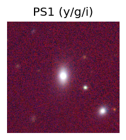
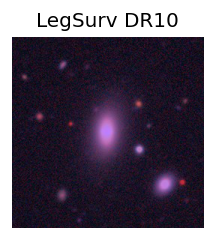
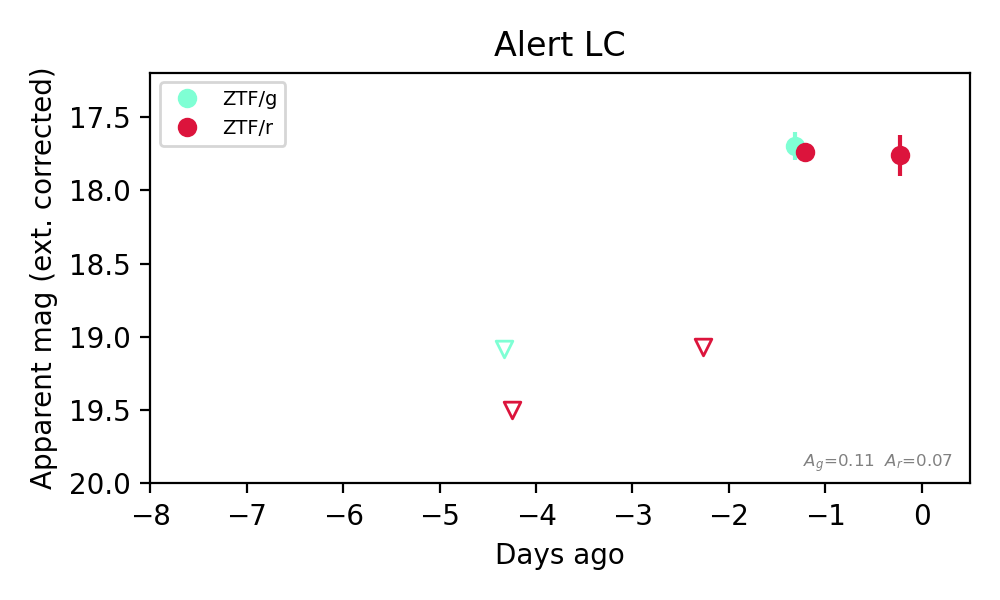
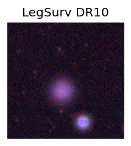
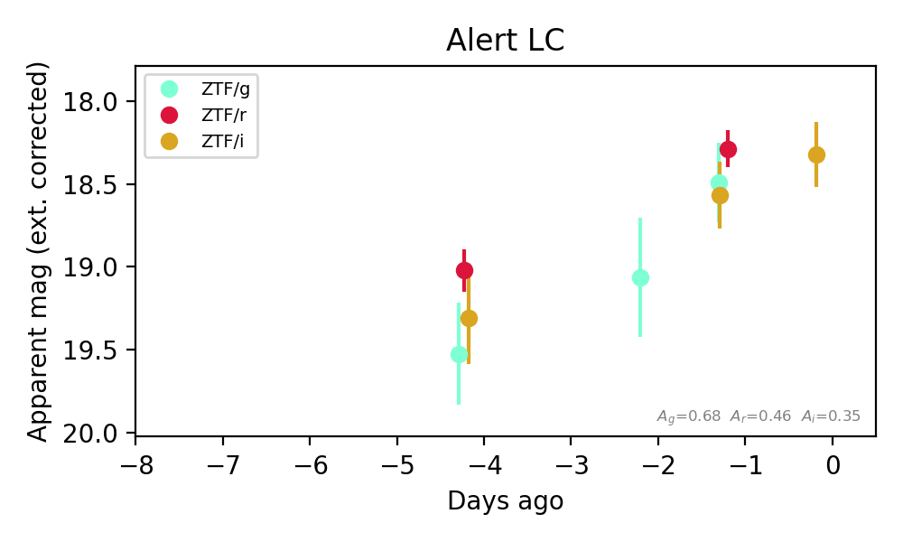
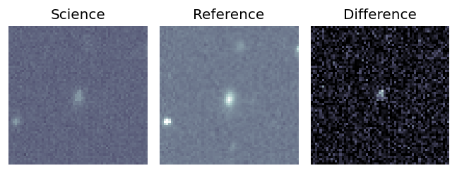
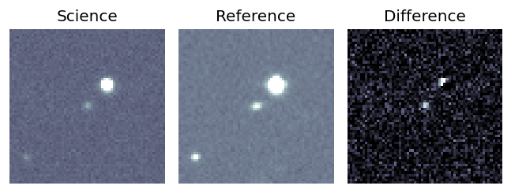
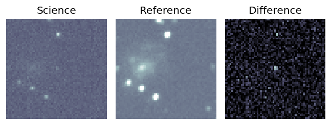
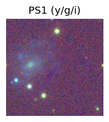
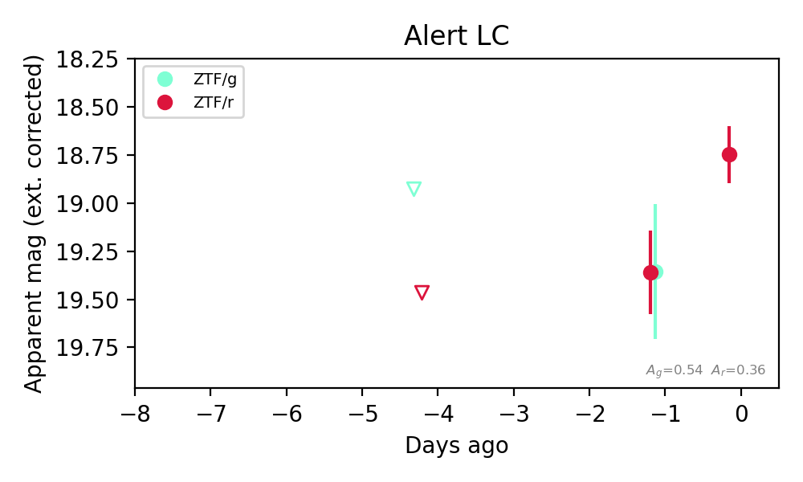

Candidate List 20261126Last night — ZTF: 1,267 passed basic cuts (23 young) · LSST: 0 passed basic cuts (0 young)Previous Day Next Day
Section 1: New Sources (age<1d) Section 2: Old (1-5d) sources observed last night Section 3: Already classified as a supernova on TNSplaceholder
Section 1: New Afterglow/FBOT Cands Last Night (0)
Section 2: Older Sources Observed Last Night (6)
1. [ZTF] ZTF26acimuzg (Afterglow?) (TNS: AT 2026akhr) [Back to Top] [Share] [Trigger Swift] [Fritz Alert] [Fritz Source] [Lasair]RA, Dec: 30.93356, -16.5955 2h 3m44.05s, -16d-35m-43.79sGalactic (l, b): 184.46147, -70.23109 ext(g-r) = 0.034


TESS: Sectors [ 3 30 97 108]
NED photo-z only: WISEA J020344.07-163544.2 (G, 0.6″) z=0.0563 [zflag PUN] — not used for peak abs mag
PS1: 0 sources in 3 arcsec
LegacySurvey: 0 sources in 3 arcsec

Extinction-corrected gr color:
From alerts: -0.04 +/- 0.11 mag
Consistent with synchrotron, g-r>0!
Rise Rate:
g: 0.46 mag/day
r: 1.26 mag/day
Fade Rate:
2. [ZTF] ZTF26acimzrd (FBOT?) (TNS: AT 2026akqi) [Back to Top] [Share] [Trigger Swift] [Fritz Alert] [Fritz Source] [Lasair]RA, Dec: 44.82411, 7.36554 2h59m17.79s, 7d21m55.94sGalactic (l, b): 169.4597, -43.65835 ext(g-r) = 0.219


TESS: Sectors [ 4 31 42 43 44 70 71]
PS1: 0 sources in 3 arcsec
LegacySurvey: 1 sources in 3 arcsec Closest: d = 3.45 arcsec, 141.7 deg (east of north) photoz=0.13 (68% bounds 0.07, 0.2), type=EXP peak abs mag (ext. corrected) = -20.59 (68% bounds -19.39, -21.68)

Extinction-corrected gr color:
From alerts: 0.2 +/- 0.26 mag
Extinction-corrected gi color:
From alerts: -0.07 +/- 0.31 mag
Extinction-corrected ri color:
From alerts: -0.28 +/- 0.23 mag
Consistent with synchrotron, g-r>0!
Rise Rate:
g: 0.34 mag/day
r: 0.24 mag/day
i: 0.25 mag/day
Fade Rate:
3. [ZTF] ZTF26aciawxw (FBOT?) (TNS: AT 2026akru) [Back to Top] [Share] [Trigger Swift] [Fritz Alert] [Fritz Source] [Lasair]RA, Dec: 178.04999, 52.66674 11h52m12.00s, 52d40m0.26sGalactic (l, b): 142.32693, 62.17367 ext(g-r) = 0.021


TESS: Sectors [21 22 41 48 75]
SDSS (<15 kpc):Found SDSS phot-z: z=0.08; peak abs mag = -19.73
NED host (10 arcsec):Found SDSS J115212.03+523957.7 (G, 2.6″); NED spec-z: z=0.0705 [zflag SLS]; peak abs mag = -19.47
DESI (10 arcsec):Found DESI spec-z: z=0.07; peak abs mag = -19.47
PS1: 0 sources in 3 arcsec
LegacySurvey: 1 sources in 3 arcsec Closest: d = 2.34 arcsec, 62.7 deg (east of north) photoz=0.08 (68% bounds 0.02, 0.48), type=EXP peak abs mag (ext. corrected) = -19.77 (68% bounds -16.74, -24.1)


Extinction-corrected gr color:
From alerts: -0.36 +/- 0.16 mag
Rise Rate:
g: 0.26 mag/day
r: 0.25 mag/day
Fade Rate:
4. [ZTF] ZTF26acibtjn (FBOT?) [Back to Top] [Share] [Trigger Swift] [Fritz Alert] [Fritz Source] [Lasair]RA, Dec: 144.97227, 27.49378 9h39m53.34s, 27d29m37.62sGalactic (l, b): 200.95288, 47.72468 ext(g-r) = 0.024

TESS: Sectors [21 45 48]
SDSS (<15 kpc):Found SDSS phot-z: z=0.10; peak abs mag = -19.83
PS1: 0 sources in 3 arcsec
LegacySurvey: 1 sources in 3 arcsec Closest: d = 0.45 arcsec, 138.1 deg (east of north) photoz=0.08 (68% bounds 0.06, 0.11), type=SER peak abs mag (ext. corrected) = -19.28 (68% bounds -18.46, -20.01)

Extinction-corrected gr color:
From alerts: -0.17 +/- 0.19 mag
Extinction-corrected ri color:
From alerts: 0.61 +/- 99 mag
Consistent with synchrotron, g-r>0!
Rise Rate:
g: 0.29 mag/day
r: 0.31 mag/day
Fade Rate:
5. [ZTF] ZTF26aciomda (Afterglow?) [Back to Top] [Share] [Trigger Swift] [Fritz Alert] [Fritz Source] [Lasair]RA, Dec: 74.25348, 69.17208 4h57m0.83s, 69d10m19.48sGalactic (l, b): 141.87612, 15.94277 ext(g-r) = 0.172

TESS: Sectors [19 25 59 73 86]
PS1: 0 sources in 3 arcsec
LegacySurvey: 0 sources in 3 arcsec

Extinction-corrected gr color:
From alerts: -0.0 +/- 0.41 mag
Consistent with synchrotron, g-r>0!
Rise Rate:
r: 0.59 mag/day
Fade Rate:
6. [ZTF] ZTF26acirpva (FBOT?) [Back to Top] [Share] [Trigger Swift] [Fritz Alert] [Fritz Source] [Lasair]RA, Dec: 98.56083, 58.25576 6h34m14.60s, 58d15m20.74sGalactic (l, b): 157.03432, 20.65092 ext(g-r) = 0.07

TESS: Sectors [20 60 73]
PS1: 0 sources in 3 arcsec
LegacySurvey: 1 sources in 3 arcsec Closest: d = 2.16 arcsec, 4.2 deg (east of north) photoz=0.21 (68% bounds 0.04, 0.24), type=PSF peak abs mag (ext. corrected) = -21.46 (68% bounds -17.53, -21.85)

Extinction-corrected gr color:
From alerts: 0.09 +/- 99 mag
Rise Rate:
r: 0.3 mag/day
Fade Rate:
Section 3: Already classified as a supernova on TNS (0)